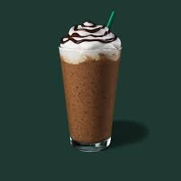
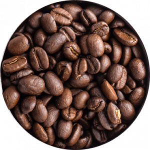
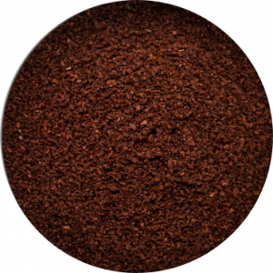

The suppliers and producers we work with are at the top of their
game. It’s our role to carry the magic from their hands to your
table.

From floral and bright to bold and smooth coffee flavors
Providing unique coffee experiences
Check out our selection of featured coffees and products
Here you can buy our featured products
We offer a wide selection of blends and beans to fill your cup

Locally Roasted Coffee
Hot Breakfast

Find Your Favourite
HOW WE STARTED
Hi, We’ve either already met or I’ll have the pleasure of meeting you when
you come in. The inspiration for my café came at an early age. I grew up
loving the smell of coffee brewing from my parent’s stovetop percolator.
They’re Greek, which means they take their coffee seriously! As my passion
for it grew, I decided to start working at a local coffee shop where I
learned the ins and outs of how to blend the perfect flavors.
Before I knew it, I was given the opportunity to own my own cafe. I was
located in the Financial District of Boston where I spent my last
twenty-three years. Besides making great coffee, I also love to meet new
people. Locals quickly realized we weren’t your ordinary coffee shop. We
knew our customers by name and always offered different flavors to try so
you didn’t get stuck with the same old drink. My past customer experiences
have made me feel like I haven’t worked a day in my life. Come check us
out, we’ve got a cup of coffee with your name on it!